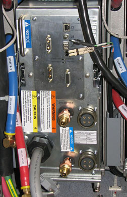
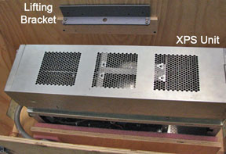
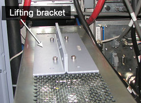
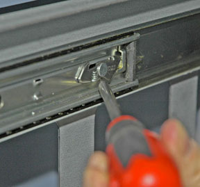
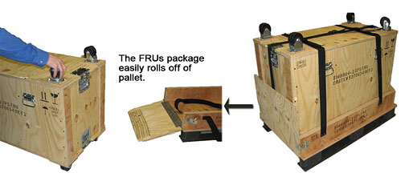
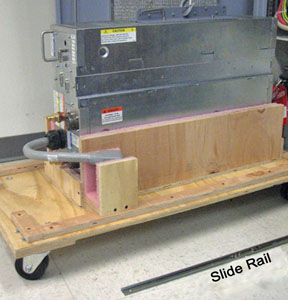
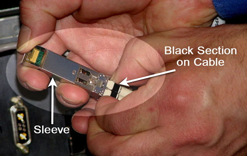

Operating Documentation
Direction 5500113, Rev# 3
Discovery MR750 3.0T Service Methods
Module Version 4.0, Version Date 9/20/10
Operating Documentation |
| Required Persons | Preliminary Reqs | Procedure | Finalization |
|---|---|---|---|
| 1 | 5 mins | 90 mins | 5 mins |
This procedure describes how to replace an eXtreme Gradient Power Supply (XPS) unit in the PGR Cabinet. The XPS unit weighs about 160 lbs. so the use of a hoist kit is required. This procedure details the correct way to use a hoist kit to remove the XPS unit and replace it with the XPS Field Replaceable Unit (FRU) safely.
| Item | Qty | Effectivity | Part# | Manufacturer | |
|---|---|---|---|---|---|
| Hoist Service Kit | 1 | - | 5196226 | - | |
| Nonmagnetic Tool Kit (or equivalent) | 1 | - | 5113258 | - | |
| Item | Qty | Effectivity | Part# | Manufacturer |
|---|---|---|---|---|
| Towels | N/A | - | - | - |
| Item | Qty | Effectivity | Part# | Manufacturer | |
|---|---|---|---|---|---|
| XPS Unit | 1 | - | 5148804-2 | - | |
| ||||
| possible personal injury or equipment damage! | ||||
| the module could fall when using the lift tool. | ||||
| before putting weight on the hoist chain, be sure that the links are aligned properly. this will help keep the chain from binding or becoming kinked, which is nearly impossible to correct when the chain is under tension. |
| Condition | Reference | Effectivity |
|---|---|---|
Power in the cabinet needs to be Off. Perform Lockout/Tagout for PGR/PDU Gradient Subsystem before replacing the XPS unit. | - | - |
Before disconnecting any cables on the front of the XPS unit, shut down the Power electronics PuMP (PPMP) at the Heat Exchanger Cabinet (HEC). Press ▲ and <F3> simultaneously to stop the pump. Next, switch the PPMP circuit breaker to OFF. | - | - |
Make sure that LOTO for PGR/PDU Gradient Subsystem was performed.
Before setting up the hoist kit, remove the XPS J9 Connector (shown below) to properly remove the main lifting beam.
Illustration 1: Lifting Beam and J9 Connector in PGR Cabinet

Perform the Hoist Service Kit and Lifting Accessories procedure to set up and secure the hoist.
| ||||
Observe the following:
| ||||
Disconnect the cables and hoses (as shown below) from the front of the XPS unit. This includes the XPS to eXtreme Gradient Amplifier (XGA) power cables, coolant lines, and fiber-optic cables.
Illustration 2: Front of XPS Unit - Cables Disconnected

Unscrew the four screws from the bottom of the Module Retaining Bracket (shown below) of the XPS unit. (The bottom two screws are captive screws, and will not fully detach from the bracket.) Completely remove the module retaining bracket and set aside as it is required for the FRU.
Illustration 3: Module Retaining Bracket

| NOTE: | If replacing the X-axis XPS, the PGR Cabinet door may be to be removed and leaned against the side of the cabinet. |
Carefully slide out the XPS unit until the top is completely exposed, but it is not fully out of the PGR Cabinet as shown below.
Illustration 4: Sliding Out XPS Unit

Place the lifting bracket from the FRU crate (shown in Illustration 5) on top of the XPS unit as shown in Illustration 6. Attachment screws are stored on the bracket. Match the four openings and screw in the lifting bracket.
| NOTE: | The back two screw holes are slightly offset. Ensure the lifting bracket is placed correctly on top of the XPS unit so the screws are completely intact. |
Illustration 5: Lifting Bracket Inside FRU Crate

Illustration 6: Lifting Bracket Attached to XPS Unit

| ||||
| bodily injury or Equipment damage! | ||||
| the combined weight of the XPS unit and hoist can shift causing harm to the equipment or the engineer. | ||||
| Make sure the hook is properly seated in the lifting bracket. |
Hook the winch from the hoist kit to the lifting bracket, and ratchet the winch to tighten the chain.
With the XPS unit held by the slide rails and the hoist kit, it is now secure enough to extend the unit until the slide rails lock. Press the release tabs (shown below) in on each side while pulling the unit out of the PGR Cabinet.
| NOTE: | When the XPS unit is leveled with the hoist, the rails will move freely. If not, adjust the hoist. |
Illustration 7: XPS Unit - Extended Out of Cabinet

Push the back end of the slide rail to unlatch the cabinet's slide rails from the XPS unit. (It may be necessary to use a screwdriver to unlatch the slide rail as shown). After it is unlatched, release the cabinet slide rails, and slide them into the cabinet. (The cabinet rails are a reverse image of each other.)
Illustration 8: Slide Rail Latch Removal

The FRU is packaged in a wooden crate. Remove the top of the wooden crate and turn it on its base, roll the top underneath the XPS unit, and lock the wheels so the container does not move.
Illustration 9: FRU Package

Ratchet the winch to lower the XPS unit onto the top of the wooden crate as shown below.
Illustration 10: XPS Unit on Crate in Front of PGR Cabinet

Once lowered, unscrew the side rails from both sides of the XPS unit as shown.
Illustration 11: Slide Rails Removed from XPS Unit

Remove the hook from the lifting bracket.
Unscrew the lifting bracket from the top of the XPS unit, and roll the removed XPS unit to the side.
Remove the center section of the FRU crate and set aside. (It is used to package the removed XPS unit.)
Bring the FRU package with the new XPS uint to the front of the cabinet. Connect the slide rails to the new unit.
Screw the lifting bracket to the top of the new XPS unit.
| ||||
| bodily injury or Equipment damage! | ||||
| the combined weight of the XPS unit and hoist can shift causing harm to the equipment or the engineer. | ||||
| Make sure the hook is properly seated in the lifting bracket. |
Hook the lifting bracket on the new XPS unit to the hoist kit.
Ratchet the winch to tighten the chains and begin lifting the unit. Slide the rail out a short distance to gauge how high to lift the new XPS unit. (The slide rails of the XPS unit and PGR Cabinet must align for correct insertion.)
When the slide rails are aligned, pull them out a short distance to get each side started. Once both of the slide rails are attached, pull the XPS unit out until a click is audible. (The click is a signal that the XPS unit is docked in the rails.)
Ensure the XPS unit is secured on the rails, and slightly loosen the chains with the winch to allow some liberty of movement.
Make sure the cables are clear prior to insertion of the XPS unit.
Press in both release tabs, and begin to slide the XPS unit in until only the top of the unit is exposed.
Unhook the hoist kit from the lifting bracket, and remove the lifting bracket from the top of the new XPS unit.
| NOTE: | Place the lifting bracket onto the XPS FRU crate with the four screws attached to the lifting bracket as shown in Illustration 5. |
Slide the XPS unit into the PGR Cabinet completely, and reattach the Module Retaining Bracket (removed from the old XPS unit earlier).
Reconnect the cables to the new XPS unit. The dual fiber-optic loopback cable may be difficult to reinsert into the new XPS unit. If experiencing difficulty connecting this cable:
Remove the sleeve from the XPS unit.
Insert the dual fiber-optic loopback cable into the sleeve by pushing in the black section on the cable as shown. A click should be felt and heard as the cable seats into the sleeve.
Illustration 12: Black Section on Dual Fiber-Optic Loopback Cable

Insert the sleeve into the new XPS unit.
| NOTE: | If the cable is inserted backwards, it will not go into the sleeve all the way. |
Disassemble the hoist kit.
Return the main lifting beam to the PGR Cabinet.
Once the beam is secure, reconnect the XPS J9 Connector, and return the support tube to the HEC.
Restore power using Lockout/Tagout for PGR/PDU Gradient Subsystem
Turn on the PPMP CB at the HEC, and start the pump by pressing ▲ and <F3> simultaneously.
Remove coolant from the XPS unit using the manual coolant removal tool. Refer to Coolant Draining.
Attach the center of the FRU package to the removed FRU unit base. Next, attach the top of the FRU crate to prepare the FRU for return.